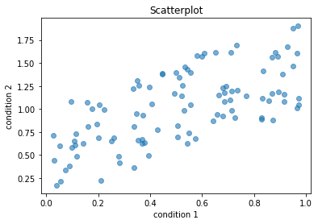

Demo notebook¶
We can also create parts of our Jupyter Book based on Jupyter Notebooks.
Let’s simulate data for two conditions and print their first ten rows:
import numpy as np
cond_1 = np.random.rand(100)
print(f'Condition 1 = {cond_1[:10]}')
cond_2 = cond_1 + (np.random.rand(100))
print(f'Condition 2 = {cond_2[:10]}')
Condition 1 = [0.86782686 0.39269414 0.09959454 0.55018529 0.44665359 0.34690306
0.91597811 0.25121797 0.713811 0.15928372]
Condition 2 = [1.16480312 0.49110063 0.58308794 0.74360545 1.38383061 0.9485538
1.16394781 0.65284649 0.98274238 0.80601072]
We can also display in our Jupyter Book more complex datastructures, like pandas dataframes:
import pandas as pd
df = pd.DataFrame(
{'condition_1': cond_1, 'condition_2': cond_2},
index=np.arange(100)
)
df[:10]
| condition_1 | condition_2 | |
|---|---|---|
| 0 | 0.867827 | 1.164803 |
| 1 | 0.392694 | 0.491101 |
| 2 | 0.099595 | 0.583088 |
| 3 | 0.550185 | 0.743605 |
| 4 | 0.446654 | 1.383831 |
| 5 | 0.346903 | 0.948554 |
| 6 | 0.915978 | 1.163948 |
| 7 | 0.251218 | 0.652846 |
| 8 | 0.713811 | 0.982742 |
| 9 | 0.159284 | 0.806011 |
And of course, we can display plots as well!
import matplotlib.pyplot as plt
plt.scatter(cond_1, cond_2, alpha=.6)
plt.xlabel('condition 1')
plt.ylabel('condition 2')
plt.title('Scatterplot')
plt.show()
